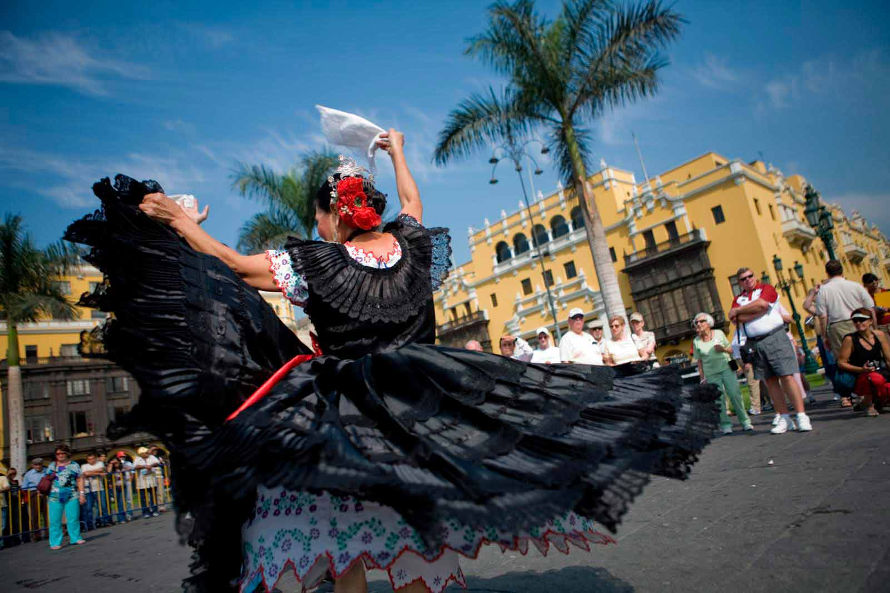
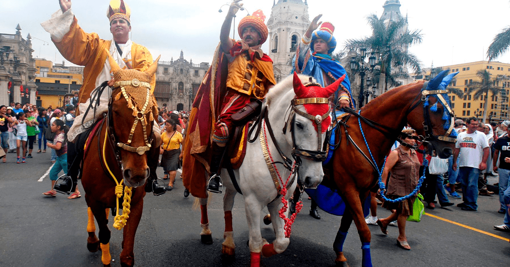
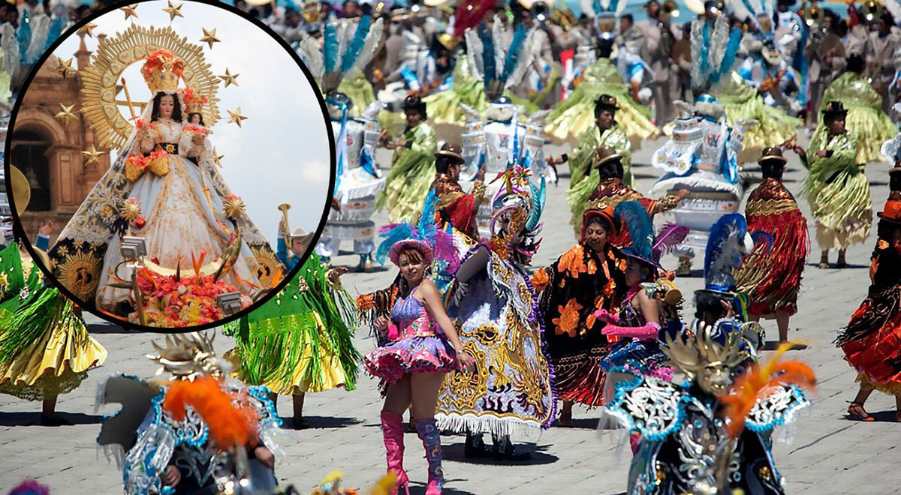
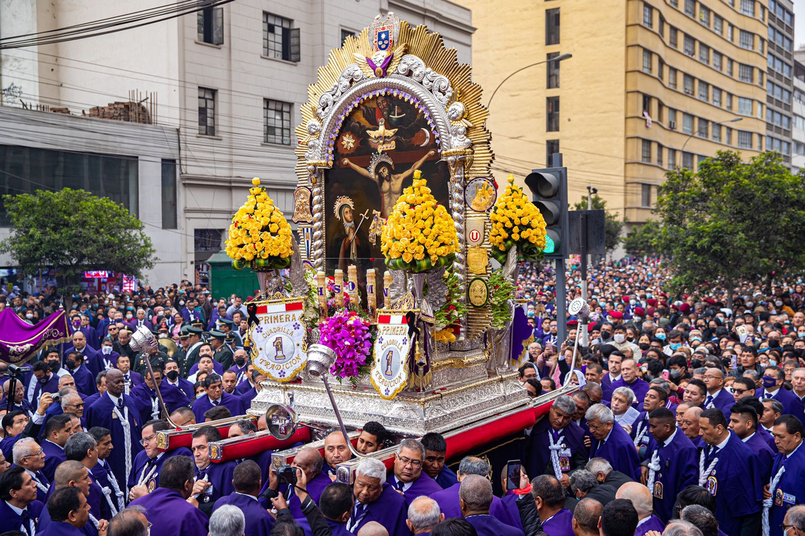
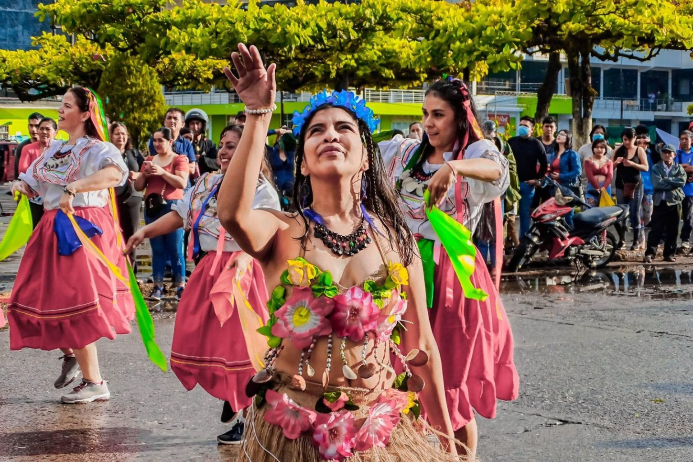
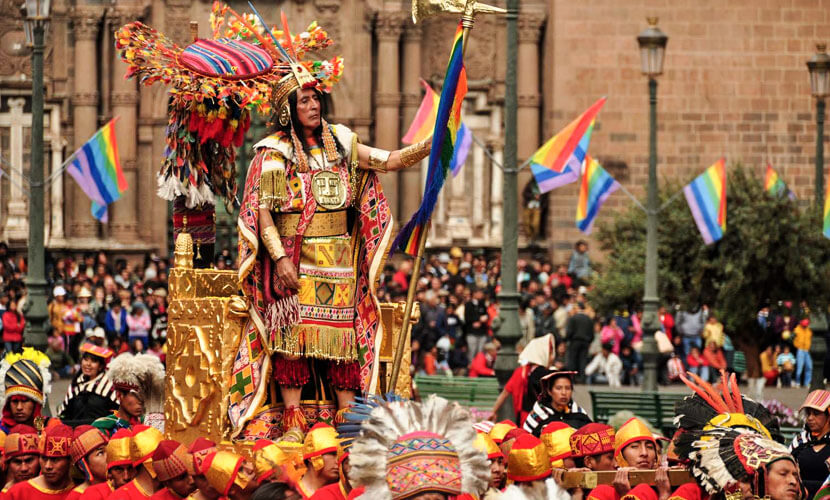
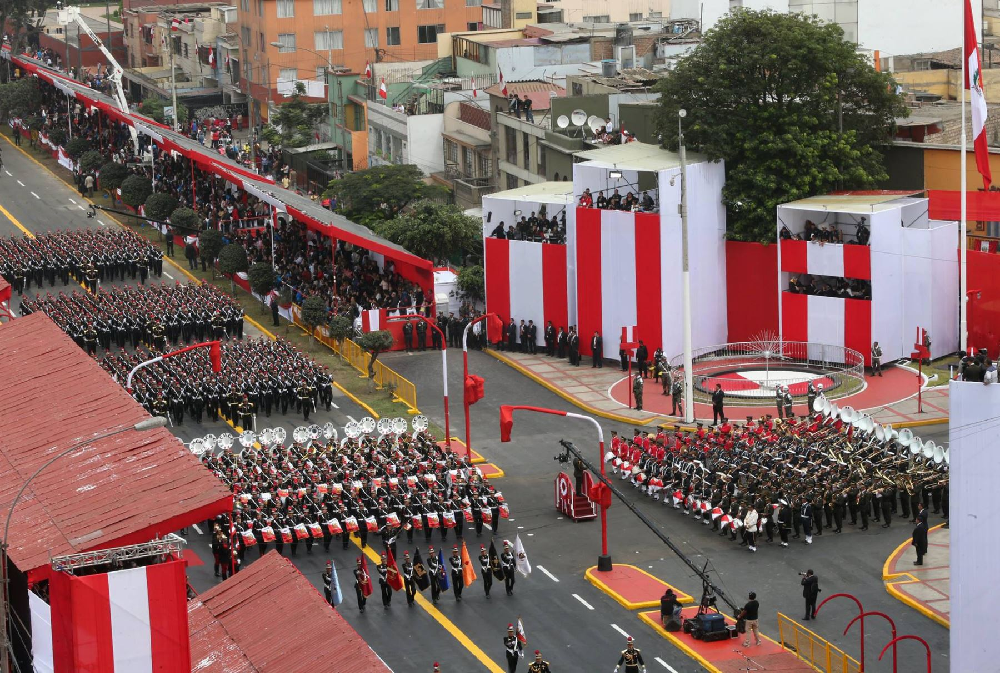
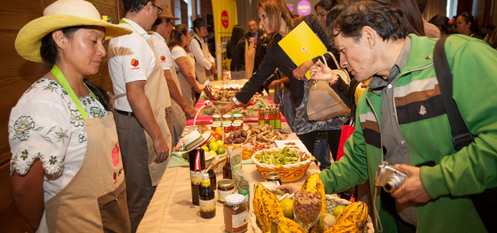
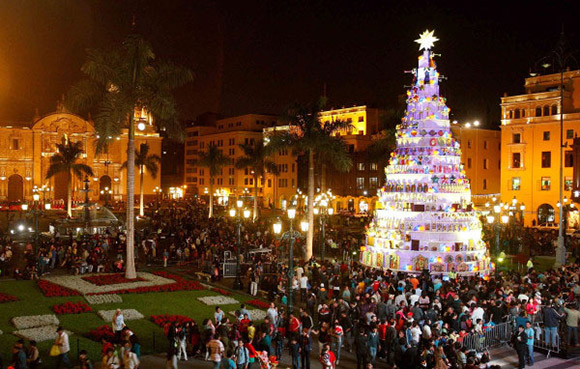
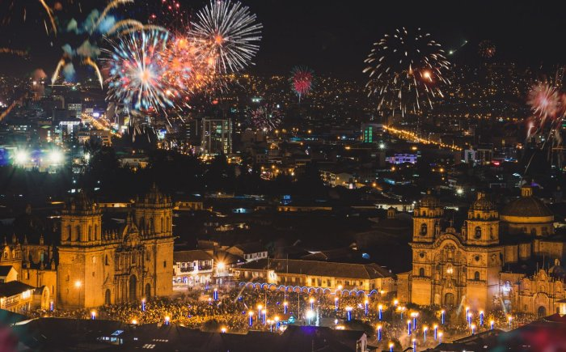

EVENTOS DEL PERÚ
FIESTAS TRADICIONALES
Perú celebra alrededor de 3000 fiestas típicas cada año. La mayoría de éstas se organizan
para honrar el día de un santo patrón. Estos santos originalmente formaron parte del
calendario cristiano, pero se integraron en las tradiciones locales peruanas y el sistema de
creencias inca durante los tiempos coloniales.
En sus intentos de someter a la población local, los españoles impusieron sus propias
tradiciones y religión cristiana a los pueblos indígenas ya sus fiestas. Consecuentemente
hay cientos de festivales y celebraciones que van por todo el calendario y por todo el
país, variando ligeramente de región a región y en sentimientos andinos o católicos.
Un buen ejemplo de este "sincretismo cultural" es la Fiesta del Corpus Christi en el Cusco.
Este día religioso, introducido por los españoles, se integró fácilmente en las prácticas
andinas, ya que coincidió con una importante peregrinación inca al Señor de Qoyllur Rit'i.
Como casi todas las ciudades y comunidades tienen su propio santo patrón, es casi
imposible tener en cuenta todas las fiestas celebradas en el Perú.
Hemos recopilado aquí una lista de los más importantes festivales tradicionales y algunas
adiciones de hoy en día te complacerán.
1 de enero - 1 de febrero: Festival de Marinera
Trujillo, La Libertad
Acerca de: Trujillo, ubicada a unos 450 km al norte de Lima, es también conocida como la Ciudad de la Eterna Primavera y es la ciudad más grande de la costa norte del Perú. Conocido mejor por su centro colonial y las ruinas pre incas de Chan-Chan, Trujillo también cuenta con un festival de un mes que celebra la danza de la Marinera. Con su origen en estilos hispanos y africanos, la danza Marinera es ahora una tradición exclusivamente peruana que celebra la cultura multicultural del Perú.
La danza marinera es un juego de seducción. El hombre imita movimientos del caballo de paso peruano, mientras coquetea con una mujer que se caracteriza por ser coqueta pero también arrogante. El hombre se viste con un sombrero de paja y un poncho mientras que la mujer lleva una blusa de seda y una falda larga y completa que usa con gran efecto. Ambos revolotean pañuelos blancos mientras se mueven a la música de las guitarras y un instrumento de percusión local llamado el Cajón peruano. Durante el mes de enero hay varias exposiciones, espectáculos y concursos que culminan en la última semana con un gran desfile y el último concurso de danza Marinera
6 de enero: Reyes Magos
Ollantaytambo, Cusco
Acerca de: Reyes Magos, o los Wise Kings como se les llama en inglés, es un festival celebrado en la pequeña y pintoresca ciudad de Ollantaytambo. Ollantaytambo se encuentra en el Valle Sagrado y es donde se toma el tren a Machu Picchu. Es mejor conocido por el sistema de riego de función fija que trae agua por toda la ciudad, ganando Ollantaytambo el apodo de Ciudad Viva del Inca por la hermosa vista y el sonido del agua que recorre las calles de la ciudad. En este festival, Ollantaytambo celebra la llegada de los tres Reyes Magos, Caspar, Melchor y Baltasar, trayendo sus dones de oro, incienso y mirra al Niño Jesús.
Del 1 al 15 de febrero: Virgen de la Candelaria
Puno, Lago Titicaca
Acerca de: La Virgen de la Candelaria, también conocida como Candelaria, es una de las fiestas más vivas de todas las fiestas religiosas de América del Sur. Una explosión de la música, de la danza, y de trajes de fascinación desciende sobre Puno por el lapso de dos semanas, dando vuelta a la ciudad pequeña en una gran fiesta. Si asisten a las fiestas de la Virgen de la Candelaria, esperan ver muchos desfiles, procesiones, espectáculos folclóricos y una mezcla de comunidades quechuas, aymaras y criollas mostrando sus mejores y más brillantes trajes.
Octubre 18- 28: El Señor de los Milagros
Lima
Acerca de: El Señor de los Milagros, Es una procesión masiva, la más grande de Sudamérica, que dura 24 horas y honra una pintura de Jesucristo. Un esclavo angoleño creó estas obras maestras que ganaron su fama después de un terremoto de 1746 que destruyó casi todo alrededor de la pintura. La pintura en sí milagrosamente sobrevivió y esto dio nombre a la pintura y los orígenes de la fiesta. Los devotos del Señor de los Milagros se visten de púrpura y las calles se llenan de oleada tras ola de seguidores vestidos de púrpura.
Del 23 al 25 de junio: San Juan
Amazonia peruana
Acerca de:Las celebraciones de Juan el Bautista en el Amazonas son otro excelente ejemplo de cómo los indígenas sacaron del cristianismo lo que estaban más familiarizados y lo que sonó cierto con su propia cultura. Juan el Bautista bautizó a Jesús en el río Jordán, predicando su evangelio.
En el Amazonas, el agua ha sostenido desde hace mucho tiempo el poder de la vida y la muerte tanto de una manera religiosa como de una manera muy real para las personas que dependen de los ríos para su alimentación, transporte y su sustento. En ciudades como Iquitos y Pucallpa, los ciudadanos van al agua para purificarse. En las celebraciones de Juan el Bautista y el poder del agua se pueden encontrar festivales de danza y música, así como exposiciones agroindustriales y artesanales. Juanes, tamales de arroz, son un tema popular y vienen en la forma de la cabeza del santo.
24-de junio: Inti Raymi
Cusco
Acerca de:Inti Raymi, el Festival Dios Sol, es una celebración masiva que comienza en la Iglesia de Santo Domingo, construida sobre las ruinas del templo central inca Qoricancha. Desfila alrededor de la plaza principal (Plaza de Armas), y finalmente se traslada a las ruinas de Saqsaywaman por encima de la ciudad.
Inti Raymi celebra el solsticio de invierno y es una reconstrucción completa de una verdadera ceremonia inca, o al menos lo más cercana posible a ella, siguiendo las pocas descripciones que dejaron atrás los cronistas españoles. Cientos de personas disfrazadas de sacerdotes, nobles, vírgenes del sol y soldados organizan una elaborada procesión y un ritual en toda la ciudad. El papel del gobernante inca Pachacuti es elegido sólo después de extensas audiciones.
28 de julio: Día de la Independencia
Todo el Perú
Acerca de:El 28 de julio Perú celebra su Día de la Independencia. El 28 de julio es la celebración oficial, que continúa hacia el 29 con muchos conciertos y festividades organizadas por los gobiernos locales. Mientras que la independencia de España fue asegurada en la batalla de Ayacucho el 9 de diciembre de 1824 en un encaminamiento masivo del ejército español por el ejército peruano, la independencia oficial no llegó hasta 1826.
Festival culinario de Mistura
Lima
Acerca de:Cuando Lima fue proclamada la capital gastronómica de Sudamérica en 2006 quedó claro por qué. Pocas ciudades de América Latina cuentan con una cultura culinaria tan extensa como la capital del Perú. Además de los restaurantes que ofrecen platos y sabores únicos durante todo el año, Lima también ofrece el Festival Culinario de Mistura que contiene en un mes más sabores que muchos otros lugares ofrecen anualmente.
El festival de la Mistura es el mayor festival culinario de Sudamérica con participantes procedentes de todo el país para mostrar sus nuevos platos, nuevos restaurantes, o para continuar la tradición de las viejas historias clásicas. Desde los vendedores de calle de gama baja hasta la crema de alta gama de los chefs de cultivos, este festival de diez días lo tiene todo.
24 y 25 de diciembre: Navidad
La mayor parte de Perú
Acerca de: La Navidad en Perú es un evento especial donde las familias se reúnen para recrear los llamados nacimientos. Al igual que la tradición de colocar árboles de Navidad en otros países, nacimientos en Perú es el principal evento de decoración de la temporada, reuniendo a toda la familia, la calidez de las fiestas y las numerosas oportunidades de compras.
En la semana que precede a la Navidad, las plazas están llenas de puestos de venta de figuritas de María y José, el niño Jesús y los santos en el pesebre decorado con brocha del campo.
31 de diciembre, 1 de enero: Año Nuevo
La mayor parte de Perú
Acerca de:Año Nuevo, Año Nuevo, es una gran fiesta en la mayoría de los lugares en Perú. El 1 de enero es un día de fiesta nacional, y la mayoría de la gente baja del trabajo al mediodía del 31 de diciembre. La noche está llena de fuegos artificiales y mucha juerga borracha. Muchos gobiernos locales organizan conciertos y otros eventos públicos gratuitos en plazas.